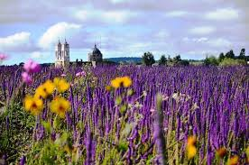
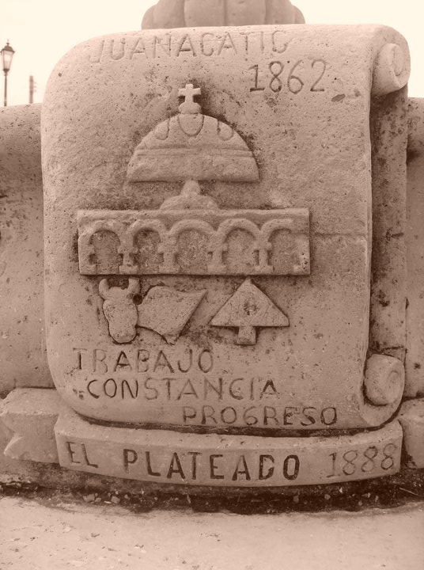

| El Plateado | Ubicacion | Parroaquia | Fundación | ||
|---|---|---|---|---|---|
| Sierra | Se le conoce como "El Plateado" a este municipio ya que según testimonios de lugareños, existió una persona que así lo apodaban, por las características de sus vestiduras, pues usaba botonaduras de plata, y esa persona se dedicaba a asaltar y robar en los caminos, muy especialmente a la línea de arrieros, que transportaban oro y plata (en barras), procedentes de las minas de Bolaños, Jalisco. Con respecto al nombre de Joaquín Amaro cabe señalar que se le agregó a "El Plateado", por acuerdo del congreso del Estado en el año de 1964, en memoria del Ilustre general zacatecano revolucionario, conociéndose el lugar desde entonces y hasta el día de hoy como "El Plateado de Joaquín Amaro". A este poblado se le llamó en sus orígenes "Acatic", y con la llegada de los españoles a colonizar a sus habitantes bautizaron a todos los indios con el nombre de "Juan", conjuntando los dos nombres Juan y Acatic, para llamarle posteriormente "Juanacatic" a todo el valle en donde se encontraba el territorio que hoy ocupa este municipio. La fecha de fundación de este Municipio fue en el año de 1862 se le comienza a llamar "El Plateado" en honor a un personaje de la región. Posteriormente en el año de 1964 por acuerdo del Congreso del Estado, se le asignó el nombre del General Joaquín Amaro en memoria del ilustre revolucionario zacatecano. Actualmente y a partir de 1998 se le volvió a cambiar el nombre retomando parte de su origen llamándole "El Plateado de Joaquín Amaro |
 | |||
| Plaza | |||||
|  | |||||
{kind=link}
{kind=link}